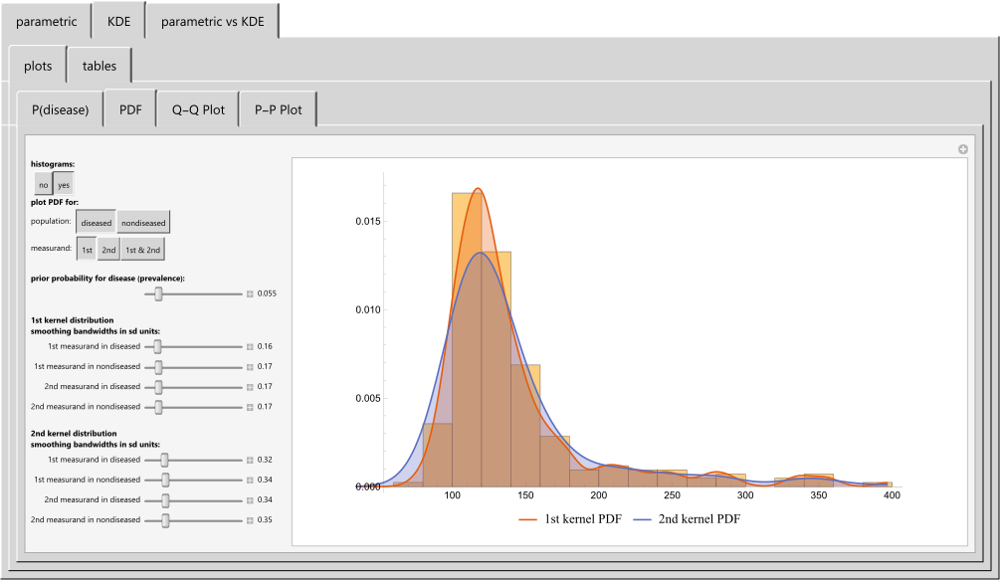

HCSL Publications
Bayesian Inference
1. Chatzimichail T., Hatjimihail AT. A Bayesian Inference Based Computational Tool for Parametric and Nonparametric Medical Diagnosis, Technical Report XXV. Drama: Hellenic Complex Systems Laboratory, 2023.
Abstract
Medical diagnosis is the basis for treatment and management decisions in healthcare. Conventional methods for medical diagnosis commonly employ established clinical criteria and fixed numerical thresholds. Such a rigid approach may fail to capture the intricate relations between diagnostic tests and the varying prevalence of diseases. To explore this further, we have developed a freely available specialized computational tool that employs Bayesian inference to calculate the posterior probability of disease diagnosis. This novel software comprises of three distinct modules, each designed to allow users to define and compare parametric and nonparametric distributions effectively. The tool is equipped to analyze datasets generated from two separate diagnostic tests, each performed on both diseased and nondiseased populations. We demonstrate the utility of this software by analyzing fasting plasma glucose and glycated hemoglobin A1c data from the National Health and Nutrition Examination Survey. Our results are validated using the oral glucose tolerance test as a reference standard, and we explore both parametric and nonparametric distribution models for the Bayesian diagnosis of diabetes mellitus.

Snapshot
Source code (Revised on 26/09/2023)